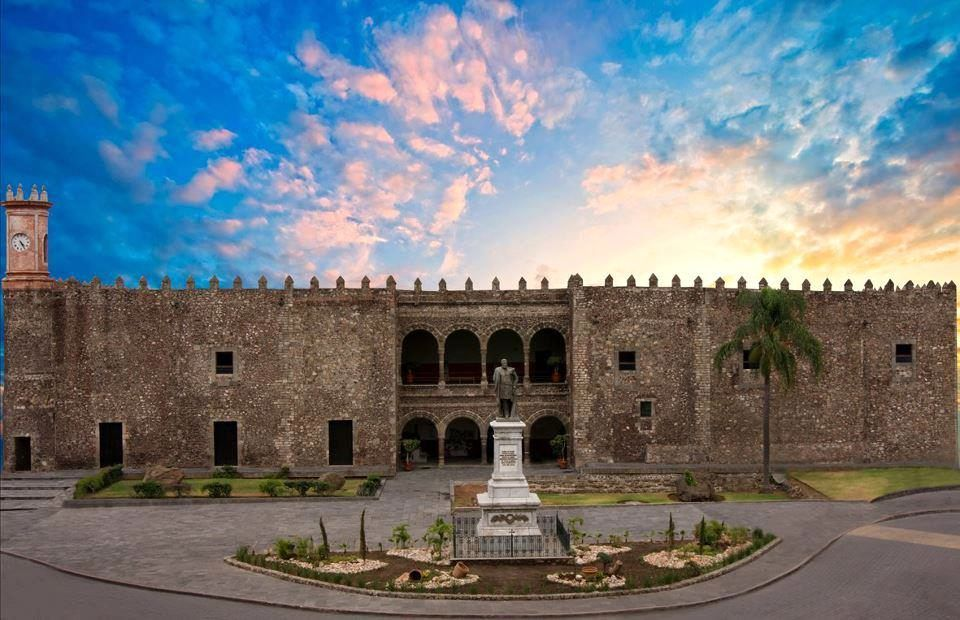
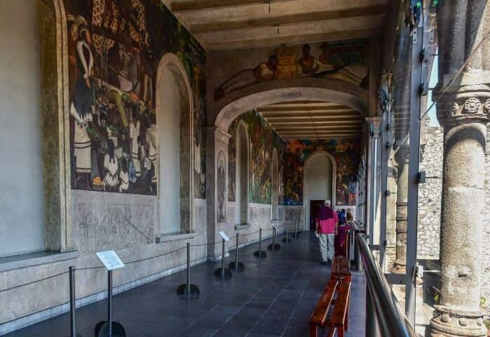

📸 Galería de Imágenes


🏛️ Historia y Reseña Completa
El Palacio de Cortés es un monumento civil del siglo XVI construido inmediatamente después de la caída de Tenochtitlán. Este edificio sirvió como residencia para Hernán Cortés y su esposa Juana Zúñiga. Su arquitectura fortificada cuenta con almenas y muros de cantera gruesos pensados para la defensa militar.
Durante la época virreinal fungió también como cárcel y almacén. Hoy en día alberga el Museo Regional de los Pueblos de Morelos, un espacio dedicado a la divulgación arqueológica, etnográfica e histórica de la entidad. El principal tesoro cultural del inmueble radica en la terraza exterior del segundo nivel, donde el célebre muralista mexicano Diego Rivera plasmó de forma magistral las crónicas de la Conquista y la Revolución Mexicana.